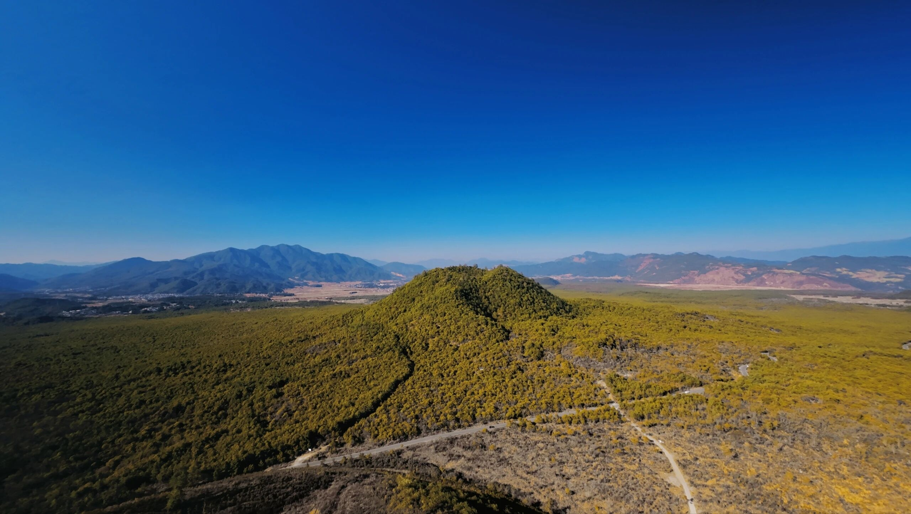
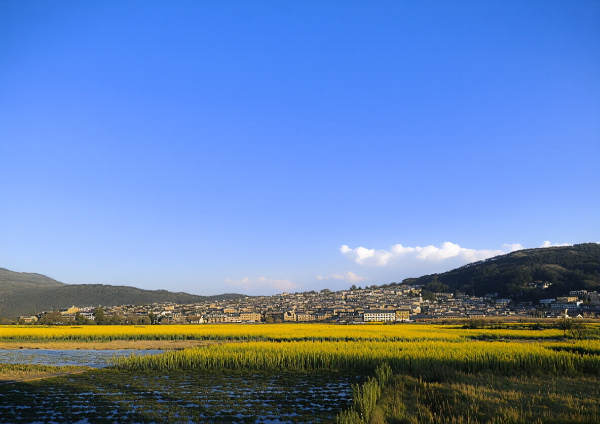
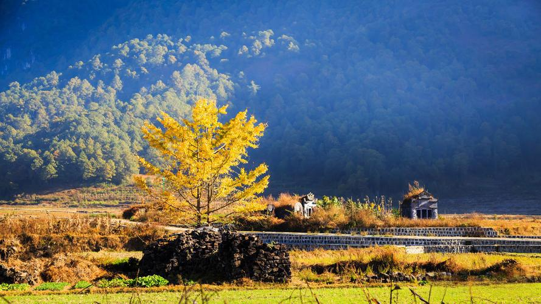
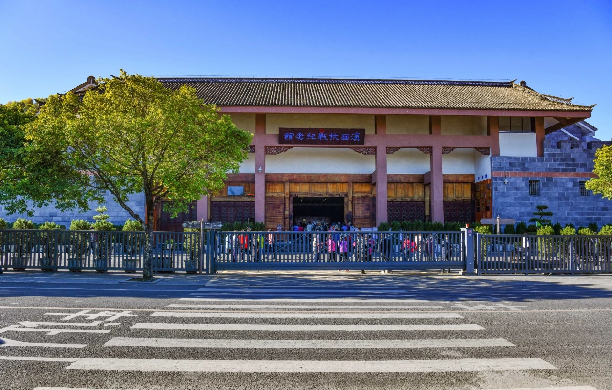
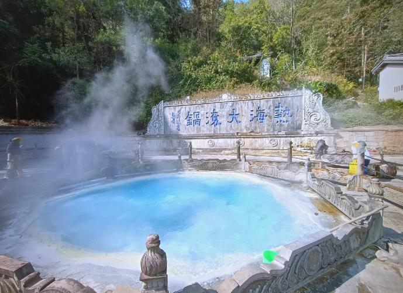
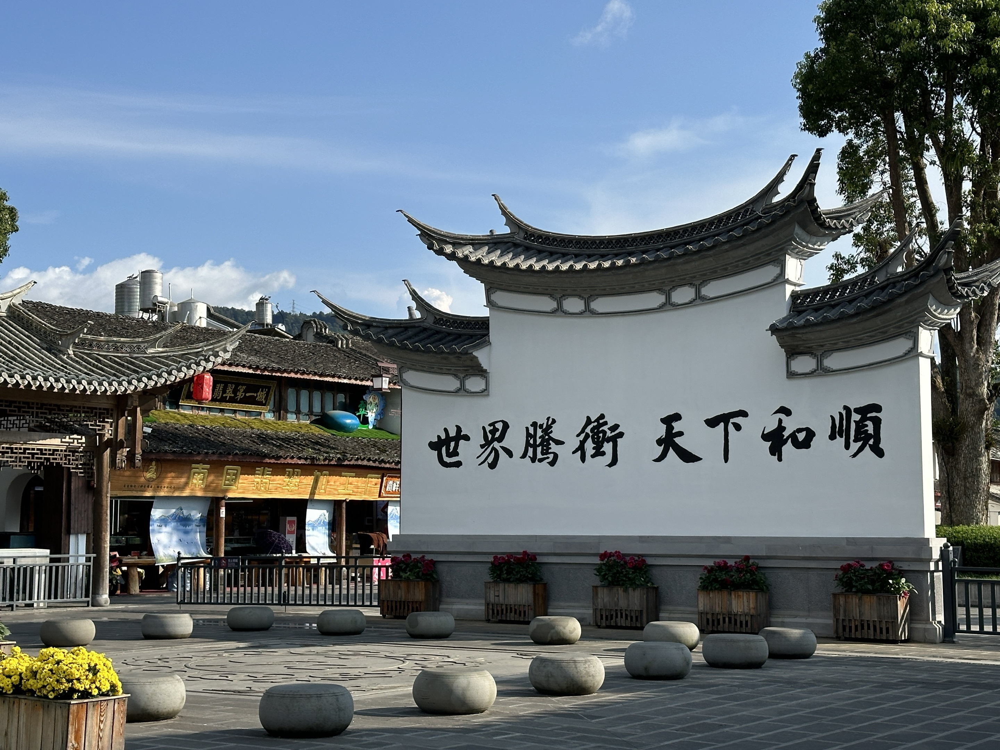
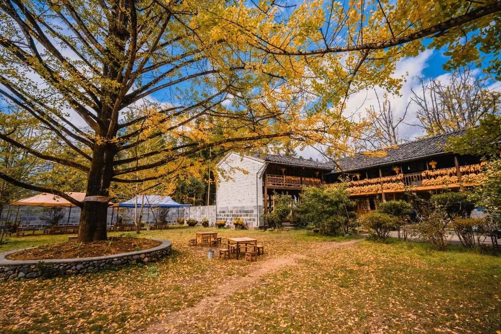
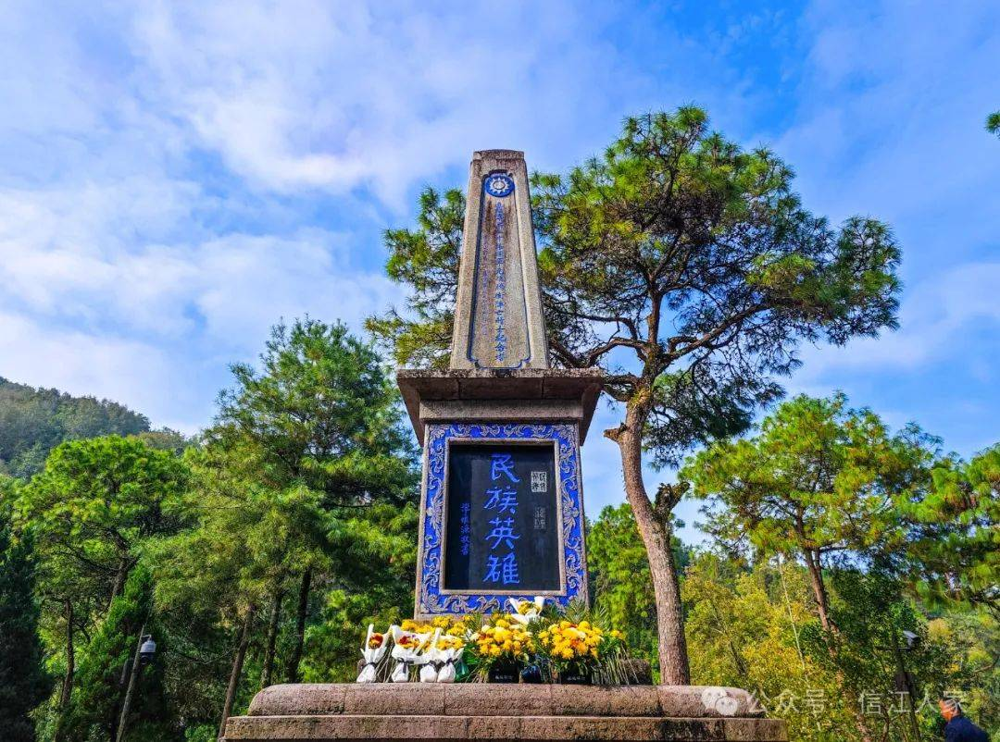

火山与温泉共生，翡翠与文化交融

600年侨乡文化，诗意栖居

满城尽带黄金甲，最美秋色在腾冲
97座火山奇观，天然地质博物馆

滇西抗战纪念馆，缅怀远征军英烈
云南省保山市腾冲市 · 中国通向南亚东南亚的重要门户
腾冲位于云南省西南部，毗邻缅甸，是中国通向南亚、东南亚的重要门户。腾冲古称“腾越”，两千余年文脉绵延，素有“极边第一城”之美誉。
这里既适合观光打卡，也适合康养休闲——欢迎你来腾冲，慢下来，好好生活。
探索腾冲最具特色的自然与人文景观




全方位了解腾冲旅游资讯与公共服务